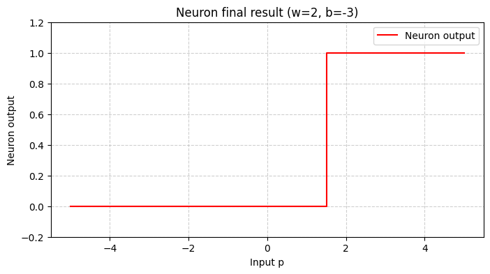
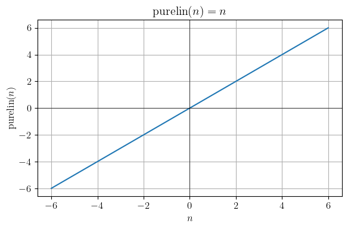
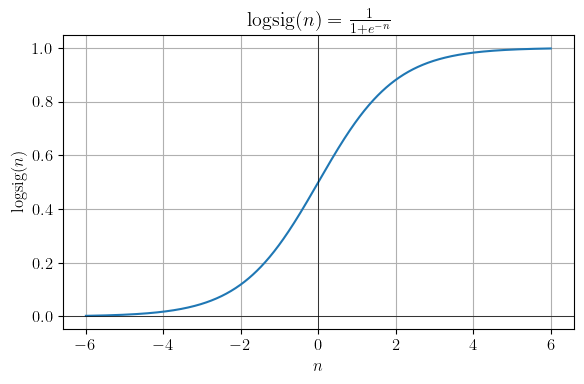
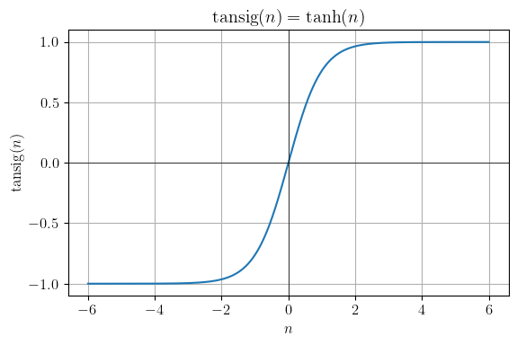
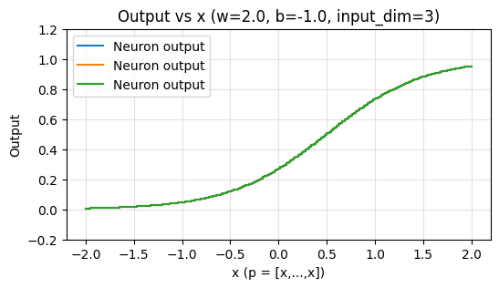

import numpy as np # import numpy
import matplotlib.pyplot as plt7 Experiments - singular neurons
In this section, we would like to put ourselves up forth, and briefly investigate the structure and implementation of single input neuron and multiple input neuron at place in python. For such, we will use numpy and matplotlib only, for everything would have to be implemented alone.
7.1 Single input neuron
This is the simplest neuron with a single input, weight, and bias. The structural formula for such network is then \(a = f(wp + b)\), where \(f\) is the activation function, just as we approached in earlier sections. To test such structure, let us define a simple hardlim activation function first.
def hardlim(n: np.float64)->np.float64: return np.float64(0.0) if n < 0 else np.float64(1.0)Let us test the behaviour of such neuron then, by constructing a simple class of such case. Because it is a fairly limited test case, we would like to just implement them separately into functions instead of a class.
def neuron(p,w,b)->np.float64:
n = np.float64(w*p+b)
print("Net input: ", n)
a = hardlim(n)
print("Neuron output: ", a)
return a Now, for \(p=2,w=3,b=-1.5\), we have
# Single input neuron: a = f(wp + b)
p = 2 # input
w = 3 # weight
b = -1.5 # bias
neuron_test = neuron(p,w,b)Net input: 4.5
Neuron output: 1.0Try it for a few more parameters, as always. The contribution is skewed in such case, where the weighted score influence the scaling unit much more, however, though, because it is a hard limit function, this is only apparent in between the shifting domain. In another implementation, we can also separate the functional of addition, \(wp+b\), into another function call entirely.
def affine(p,w,b)->np.float64:
return np.float64(w*p+b)
def neuron(p,w,b)->np.float64:
n = affine(p,w,b)
print("Net input: ", n)
a = hardlim(n)
print("Neuron output: ", a)
return a Graphing the neuron object, we have:
def graph_neuron_result(w, b, p_min=-10, p_max=10, points=200):
# input range
p = np.linspace(p_min, p_max, points)
# neuron output (final result)
a = neuron(p, w, b)
# plot
plt.figure(figsize=(8, 4))
plt.step(p, a, where="mid", color="red", label="Neuron output")
plt.xlabel("Input p")
plt.ylabel("Neuron output")
plt.title(f"Neuron final result (w={w}, b={b})")
plt.ylim(-0.2, 1.2)
plt.legend()
plt.grid(True, linestyle="--", alpha=0.6)
plt.show()graph_neuron_result(w=2, b=-3, p_min=-5, p_max=5)Net input: [-13. -12.89949749 -12.79899497 -12.69849246 -12.59798995
-12.49748744 -12.39698492 -12.29648241 -12.1959799 -12.09547739
-11.99497487 -11.89447236 -11.79396985 -11.69346734 -11.59296482
-11.49246231 -11.3919598 -11.29145729 -11.19095477 -11.09045226
-10.98994975 -10.88944724 -10.78894472 -10.68844221 -10.5879397
-10.48743719 -10.38693467 -10.28643216 -10.18592965 -10.08542714
-9.98492462 -9.88442211 -9.7839196 -9.68341709 -9.58291457
-9.48241206 -9.38190955 -9.28140704 -9.18090452 -9.08040201
-8.9798995 -8.87939698 -8.77889447 -8.67839196 -8.57788945
-8.47738693 -8.37688442 -8.27638191 -8.1758794 -8.07537688
-7.97487437 -7.87437186 -7.77386935 -7.67336683 -7.57286432
-7.47236181 -7.3718593 -7.27135678 -7.17085427 -7.07035176
-6.96984925 -6.86934673 -6.76884422 -6.66834171 -6.5678392
-6.46733668 -6.36683417 -6.26633166 -6.16582915 -6.06532663
-5.96482412 -5.86432161 -5.7638191 -5.66331658 -5.56281407
-5.46231156 -5.36180905 -5.26130653 -5.16080402 -5.06030151
-4.95979899 -4.85929648 -4.75879397 -4.65829146 -4.55778894
-4.45728643 -4.35678392 -4.25628141 -4.15577889 -4.05527638
-3.95477387 -3.85427136 -3.75376884 -3.65326633 -3.55276382
-3.45226131 -3.35175879 -3.25125628 -3.15075377 -3.05025126
-2.94974874 -2.84924623 -2.74874372 -2.64824121 -2.54773869
-2.44723618 -2.34673367 -2.24623116 -2.14572864 -2.04522613
-1.94472362 -1.84422111 -1.74371859 -1.64321608 -1.54271357
-1.44221106 -1.34170854 -1.24120603 -1.14070352 -1.04020101
-0.93969849 -0.83919598 -0.73869347 -0.63819095 -0.53768844
-0.43718593 -0.33668342 -0.2361809 -0.13567839 -0.03517588
0.06532663 0.16582915 0.26633166 0.36683417 0.46733668
0.5678392 0.66834171 0.76884422 0.86934673 0.96984925
1.07035176 1.17085427 1.27135678 1.3718593 1.47236181
1.57286432 1.67336683 1.77386935 1.87437186 1.97487437
2.07537688 2.1758794 2.27638191 2.37688442 2.47738693
2.57788945 2.67839196 2.77889447 2.87939698 2.9798995
3.08040201 3.18090452 3.28140704 3.38190955 3.48241206
3.58291457 3.68341709 3.7839196 3.88442211 3.98492462
4.08542714 4.18592965 4.28643216 4.38693467 4.48743719
4.5879397 4.68844221 4.78894472 4.88944724 4.98994975
5.09045226 5.19095477 5.29145729 5.3919598 5.49246231
5.59296482 5.69346734 5.79396985 5.89447236 5.99497487
6.09547739 6.1959799 6.29648241 6.39698492 6.49748744
6.59798995 6.69849246 6.79899497 6.89949749 7. ]
Neuron output: [0. 0. 0. 0. 0. 0. 0. 0. 0. 0. 0. 0. 0. 0. 0. 0. 0. 0. 0. 0. 0. 0. 0. 0.
0. 0. 0. 0. 0. 0. 0. 0. 0. 0. 0. 0. 0. 0. 0. 0. 0. 0. 0. 0. 0. 0. 0. 0.
0. 0. 0. 0. 0. 0. 0. 0. 0. 0. 0. 0. 0. 0. 0. 0. 0. 0. 0. 0. 0. 0. 0. 0.
0. 0. 0. 0. 0. 0. 0. 0. 0. 0. 0. 0. 0. 0. 0. 0. 0. 0. 0. 0. 0. 0. 0. 0.
0. 0. 0. 0. 0. 0. 0. 0. 0. 0. 0. 0. 0. 0. 0. 0. 0. 0. 0. 0. 0. 0. 0. 0.
0. 0. 0. 0. 0. 0. 0. 0. 0. 0. 1. 1. 1. 1. 1. 1. 1. 1. 1. 1. 1. 1. 1. 1.
1. 1. 1. 1. 1. 1. 1. 1. 1. 1. 1. 1. 1. 1. 1. 1. 1. 1. 1. 1. 1. 1. 1. 1.
1. 1. 1. 1. 1. 1. 1. 1. 1. 1. 1. 1. 1. 1. 1. 1. 1. 1. 1. 1. 1. 1. 1. 1.
1. 1. 1. 1. 1. 1. 1. 1.]
This is still the same in operation, however, it is more streamlined. Hence, for now, we can say that a neuron is simply \(n_{1}=N[f(x),a(x)](p)\) unit for two functions of the function space.
7.2 Transfer Function
Now, let us investigate more on other activation functions in question. For now, let begin with purelin, logsig, and tansig function of interest. They are much more versatile than that to begin with, so we would like to test a few more things on top of such.
def purelin(n:np.float64)->np.float64:
"""
Basically the linear version of the activation function
"""
return n
def logsig(n:np.float64)->np.float64:
return np.float64(1 / (1 + np.exp(-n)))
def tansig(n:np.float64)->np.float64:
return np.float64(np.tanh(n))Let us see some illustration and calculation of such function. To do such illustration, we have to use a different variation of it, to process array type illustrative function call.
def hardlim_arr(n: np.ndarray) -> np.ndarray:
return np.where(n < 0, np.float64(0.0), np.float64(1.0))
def purelin_arr(n: np.ndarray) -> np.ndarray:
return n
def logsig_arr(n):
n = n if isinstance(n, np.ndarray) else np.asarray(n, dtype=np.float64)
return 1.0 / (1.0 + np.exp(-n))
def tansig_arr(n):
n = n if isinstance(n, np.ndarray) else np.asarray(n, dtype=np.float64)
return np.tanh(n)These will take input as an array, only for illustration purpose. We still use the singular input scalar one for our own neuron, just in case, or so is special. Now, let illustrate what it can do, with a few simple ones.
n = np.linspace(-5, 5, 10)#print("Transfer Function Chain:", purelin_arr(logsig_arr(tansig_arr(hardlim_arr(n)))))
print("Linear:", purelin_arr(n))
print("Log-sigmoid:", logsig_arr(n))
print("Tanh:", tansig_arr(n))Linear: [-5. -3.88888889 -2.77777778 -1.66666667 -0.55555556 0.55555556
1.66666667 2.77777778 3.88888889 5. ]
Log-sigmoid: [0.00669285 0.02005754 0.0585369 0.1588691 0.36457644 0.63542356
0.8411309 0.9414631 0.97994246 0.99330715]
Tanh: [-0.9999092 -0.99916247 -0.99229794 -0.93110961 -0.5046724 0.5046724
0.93110961 0.99229794 0.99916247 0.9999092 ]plt.rcParams.update({ # To use LaTeX so yeah
"text.usetex": True,
"font.size": 12
})
x = np.linspace(-6, 6, 1001, dtype=np.float64)
# Compute values
#y_chain = purelin_arr(logsig_arr(tansig_arr(hardlim_arr(x))))
y_purelin = purelin_arr(x)
y_logsig = logsig_arr(x)
y_tansig = tansig_arr(x)
# ---- Plot purelin ----
plt.figure(figsize=(6,4))
plt.plot(x, y_purelin)
plt.axhline(0, linewidth=0.5, color="black")
plt.axvline(0, linewidth=0.5, color="black")
plt.title(r'$\mathrm{purelin}(n) = n$')
plt.xlabel(r'$n$')
plt.ylabel(r'$\mathrm{purelin}(n)$')
plt.grid(True)
plt.tight_layout()
plt.show()
# ---- Plot logsig ----
plt.figure(figsize=(6,4))
plt.plot(x, y_logsig)
plt.axhline(0, linewidth=0.5, color="black")
plt.axvline(0, linewidth=0.5, color="black")
plt.title(r'$\mathrm{logsig}(n)=\frac{1}{1+e^{-n}}$')
plt.xlabel(r'$n$')
plt.ylabel(r'$\mathrm{logsig}(n)$')
plt.grid(True)
plt.tight_layout()
plt.show()
# ---- Plot tansig ----
plt.figure(figsize=(6,4))
plt.plot(x, y_tansig)
plt.axhline(0, linewidth=0.5, color="black")
plt.axvline(0, linewidth=0.5, color="black")
plt.title(r'$\mathrm{tansig}(n)=\tanh(n)$')
plt.xlabel(r'$n$')
plt.ylabel(r'$\mathrm{tansig}(n)$')
plt.grid(True)
plt.tight_layout()
plt.show()


As we can see, there are a lot of variations of such, and you can modify at will, but they all have their domain range configured pretty tight, beside from purelim which is just a linear unit. There are other functions, too, but generally, they are perhaps the same in functionality. Since it relies on the interpretation, the formulation of the activation function is generally configured to fit in a certain pattern of response. As such, there exists the equal non-disruptive signal transceiver, and then there exist threshold-aware transfer function like sigmoid.
7.3 Multiple-input neurons
We now can base our virtue on examining the structure interpretation of the multiple input neuron. By such, we have the following simple construction:
def neuron(W, p, b, f):
n = np.dot(W, p) + b
return f(n)We can then pass a function \(f\) in, for example,
W = np.array([0.5, -1.0, 2.0]) # weights
p = np.array([1.0, 2.0, -1.0]) # inputs
b = 0.1
neuron2 = neuron(W,p,b,logsig) # geting the result direction.
print(neuron2)0.032295464698450516Let us see the graphing of such neuron, well, not by much. We will use the following code to implement such, with a forward pass only. Later on we will have to incorporate them altogether to reduce messiness.
from typing import Union, Sequence
Number = Union[int, float, np.number]
ArrayLike = Union[Number, Sequence[Number], np.ndarray]def _to_1d_array(x: ArrayLike) -> np.ndarray:
a = np.asarray(x)
if a.ndim == 0:
return a.reshape(1)
if a.ndim > 1:
raise ValueError("Only scalars or 1-D arrays/lists are accepted.")
return aBecause of technological backlogs and the like, we need _to_1d_array to convert scalar to accordance 1D array of numpy.
For now, let just use it with the configuration of, well, a total functional forward pass.
def forward_pass(p: ArrayLike, w: ArrayLike, b: Number = 0.0):
"""Return (net, out). Keeps your hardlim as-is."""
p = _to_1d_array(p)
w = _to_1d_array(w)
if w.size == 1:
net = w.item() * p + b # elementwise if p has >1 element
else:
if p.size != w.size:
raise ValueError(f"w length {w.size} != p length {p.size}")
net = np.dot(w, p) + b # scalar
out = logsig_arr(net) # use user-provided hardlim
# normalize 0-D or size-1 arrays to Python floats
net_a = np.asarray(net)
out_a = np.asarray(out)
if net_a.size == 1:
net = float(net_a.item())
if out_a.size == 1:
out = float(out_a.item())
return net, outAnd the grapher
def graph_forward(w: ArrayLike, b: Number, input_dim: int = 3,
x_min: float = -2.0, x_max: float = 2.0, n_points: int = 200):
xs = np.linspace(x_min, x_max, n_points)
outs = []
for x in xs:
p = np.full(input_dim, x, dtype=np.float64)
_, out = forward_pass(p, w, b)
outs.append(out)
plt.figure(figsize=(6,3))
plt.step(xs, outs, where='mid', label='Neuron output')
plt.ylim(-0.2, 1.2)
plt.xlabel('x (p = [x,...,x])')
plt.ylabel('Output')
plt.title(f'Output vs x (w={w}, b={b}, input_dim={input_dim})')
plt.grid(alpha=0.35)
plt.legend()
plt.show()graph_forward(w=2.0, b=-1.0, input_dim=3)
There are a few more tests that I should be able to make, and is of backlog. However, to do it in a more organized manner, we want to shift it to another section, so that we can know what to do. Not that I am lazy, that is. Ideally, we should be able to package them together.